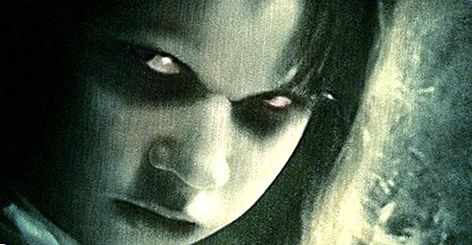
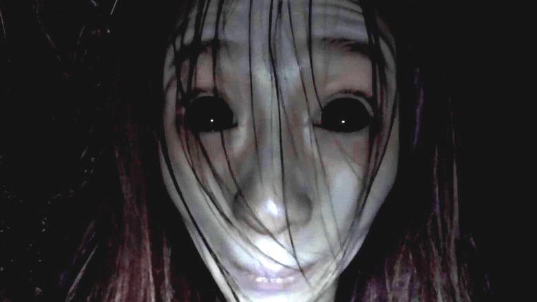

Hallod, amint az anyukád lehív a konyhába. Majd, amint mész le a lépcsőn, a szekrényből megszólal egy hang: 'Ne menj le oda kicsim, én is hallottam'

Mikor reggel felébredtem, valahogy minden furcsának tűnt; túl nagy volt a csend odakint.
Azután kinéztem az ablakon és láttam,
hogy mindenki mereven áll, és egytől-egyig a házamra mered.

Nézz rá az eredeti weboldalra a nemtudom-ra kattintva!